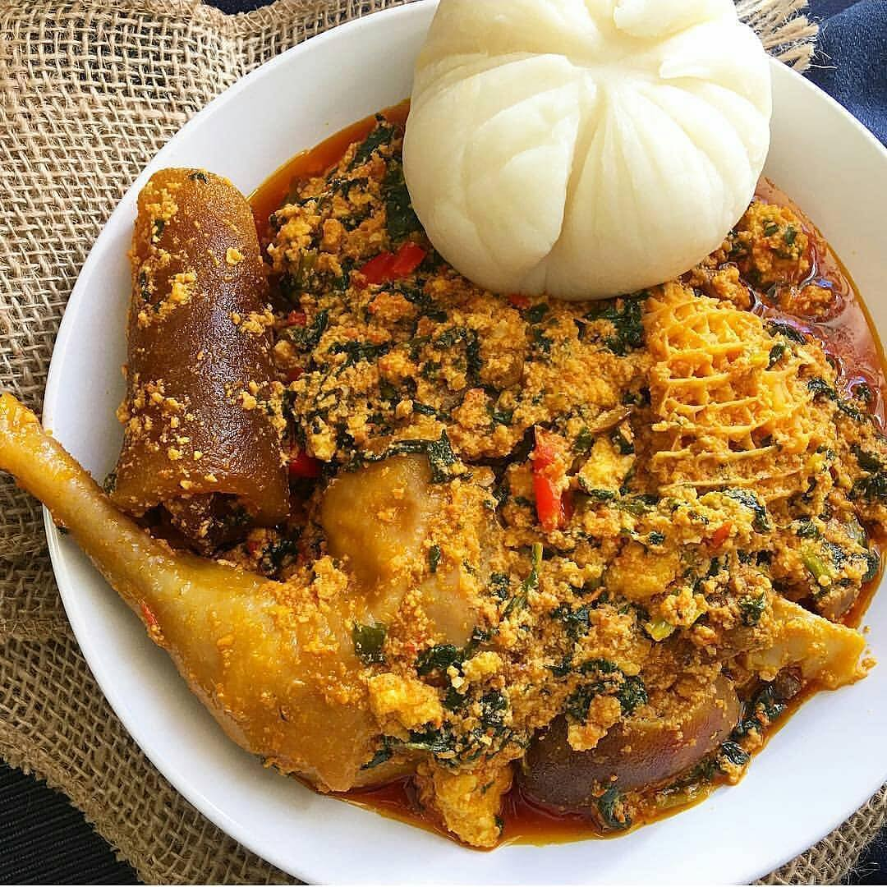
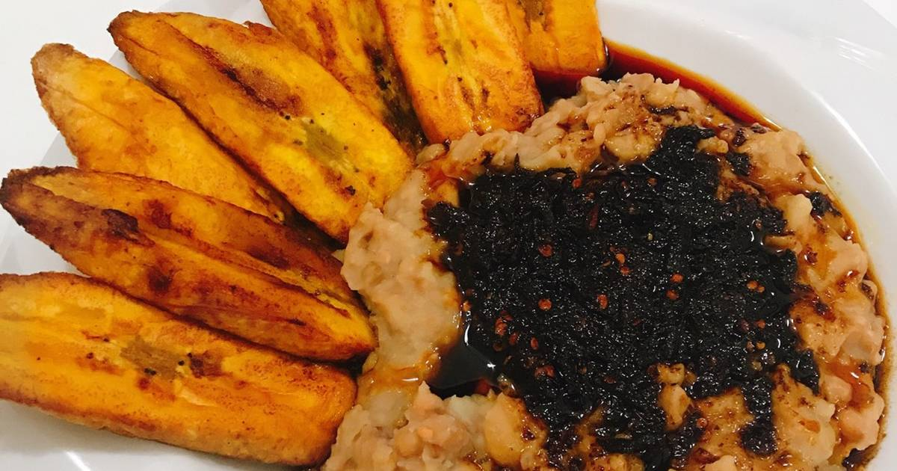
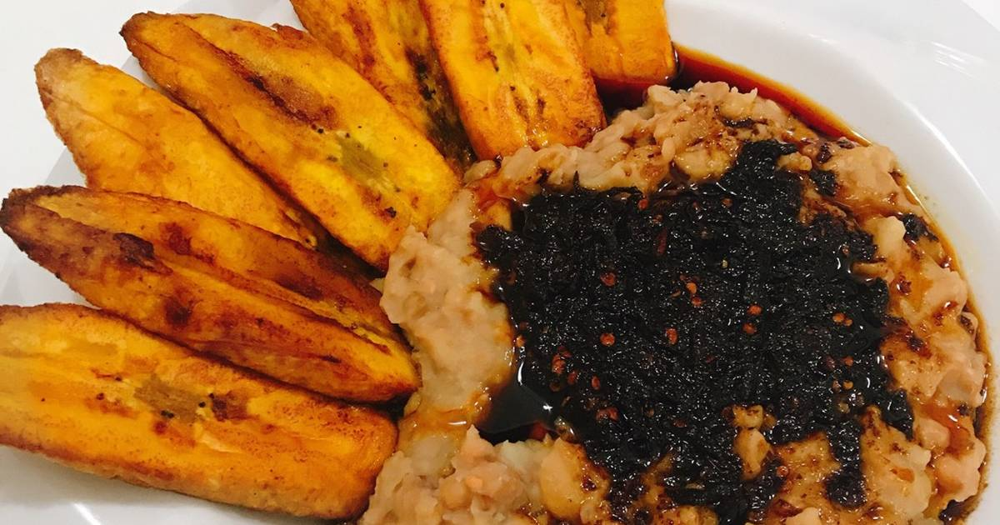

WELCOME TO 0412 FOOD GALLEY
Your Satisfaction is our Pleasure
A healthy diet is essential for good health and nutrition. It protects you against many chronic noncommunicable diseases, such as heart disease, diabetes and cancer. Eating a variety of foods and consuming less salt, sugars and saturated and industrially-produced trans-fats, are essential for healthy diet.
 

Hungry? Having a busy and long day? Then you are at the right place! 0412FOOD GALLEY offers a detailed and large list of delicious restaurants around you. Whether it is a delicious Burger, Pizza, Chinese or any kind of food you are looking for, 0412FOOD GALLEY offers an extensive service of food delivered at your door step. Just select your location, choose your favorite food and restaurant and we will deliver it at your doorstep. Our food delivery service is very efficient for those busy ones who are not having time to go out get their food. We deliver your food at your place with time efficiency. 0412FOOD GALLEY is the best place to get your food delivered at your doorstep with no time from your nearby restaurants. We offer food delivery service to our customers on 24/7 hours basis. Whether it is a late night in the office, a lunch with a colleague, a family gathering or an empty tummy, your favorite food is just one tap away from you.